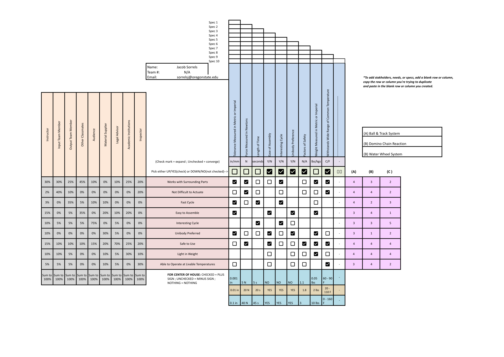

The brainstorming process laid the foundation for the project by identifying key requirements, engineering specifications, and possible systems to implement. The goal was to create a functional, efficient, and innovative component for the Rube Goldberg machine. A stakeholder analysis was done to better understand the requirements of the project, which will lead to further the direction of the design. Not a whole lot is decided at this stage, but ideas are starting to formulate.
Key Stakeholders
Tier 1: Instructor, Input/Output Team Members, Other Classmates
Tier 2: Audience, Material Supplier, Legal Advisor
Tier 3: Academic Institution, Inspector
Engineering Specifications
Works With Surrounding Parts: Tolerances of 1/1000 to 1/10 inch for fitment.
Not Difficult to Actuate: Actuation force between 5-40 Newtons.
Fast Cycle: Process duration between 5-30 seconds.
Easy to Assemble: A simple design with 3-4 pieces maximum.
Small in Size: Compact dimensions to minimize delays.
Unibody Preferred: Simplifies assembly and reduces material costs.
Safe to Use: Safety factor greater than 1.
Light in Weight: Optimized for easy handling.
Able to Operate at Livable Temperatures: Tolerant to 40°F - 110°F.
Benchmarking
Ball & Track System: A simple gravity-powered system with plastic or metal tracks, though prone to imbalances and jams.
Domino Chain Reaction: A fragile, gravity-driven system requiring precise setup and interaction with surrounding parts.
Waterwheel System: A rotating mechanism powered by water flow, offering rotational force for other mechanisms. It requires careful water flow management.

Brainstorming Sketch: Initial ideas and system designs.